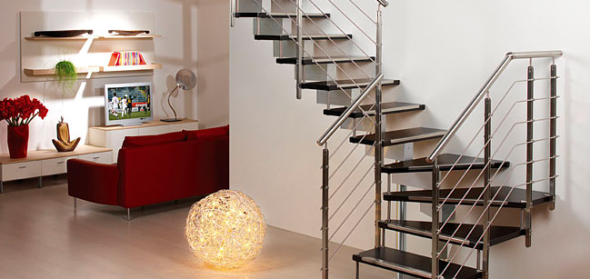
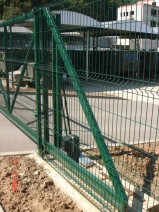
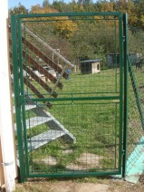
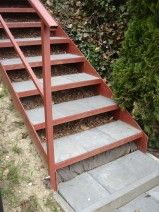
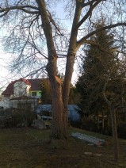
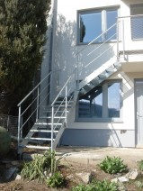
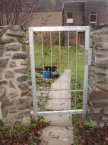
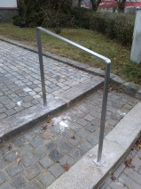

Poctivé řemeslo v oceli, nerezu a skle. Konstrukce, které přetrvají generace.
Vyrábíme atypická točitá schodiště, elegantní nerezová a prosklená zábradlí, pojezdové samonosné brány i nosné ocelové konstrukce. Od 3D projekce až po finální montáž s certifikací ČSN EN 1090-2.

Výrobní areál Vojánky
Kompletní zámečnická vybavenost v Blansku pro náročné architektonické i průmyslové projekty.
Když se technická preciznost setká s architektonickým detailem
Společnost ALDO metal, s.r.o. vznikla v Blansku s jasnou vizí: poskytovat investorům, architektům i soukromým stavebníkům zámečnické výrobky, které vynikají nekompromisní statickou pevností a čistým designem. Nespoléháme na sériové polotovary, každý prvek navrhujeme individuálně podle dispozic stavby.
Naše výrobní portfolio sahá od subtilních točitých schodišť s nášlapy z masivního dubu či kaleného skla, přes bezpečnostní zábradlí pro bytové domy, až po těžké nosné konstrukce a průmyslové brány.
Disponujeme moderním svářečským a zámečnickým vybavením s certifikovanými postupy dle ČSN EN ISO 9606-1. Zajišťujeme kompletní povrchové úpravy od žárového zinkování po odolné práškové lakování Komaxit ve všech odstínech RAL.
Díky vlastnímu týmu montérů garantujeme přesné osazení přímo na stavbě bez zbytečných prodlev a v souladu s platnými bezpečnostními normami.
Milníky a vývoj společnosti ALDO metal
Založení firmy a dílny
Založení společnosti ALDO metal, s.r.o. a vybudování prvního zámečnického provozu v Blansku se zaměřením na zakázkovou kovovýrobu.
Certifikace ČSN EN 1090-2
Zavedení systému řízení výroby pro ocelové nosné konstrukce a rozšíření nabídky pro velké developerské a veřejné zakázky.
Modernizace areálu Vojánky
Rozšíření výrobních prostor v zóně Ericha Roučky, posílení kapacity pro zpracování nerezové oceli a 3D konstrukční přípravu.
Klíčové referenční stavby
Úspěšná realizace zakázek pro BD Kociánka Brno, Radnici Letovice, Základní školu Tišnov a průmyslové areály Pyrotek.
Sortiment zakázkových konstrukcí
Každá položka obsahuje detailní technické specifikace, materiálové složení a normové certifikace.

ČSN EN 1090-2Zakázková schodiště a točité schody
Interiérová a exteriérová ocelová schodiště všech konstrukčních typů – točitá, vřetenová, přímá i lomená s variabilními nášlapy ze dřeva, skla či pororoštů.

ČSN 74 3305Designová zábradlí a skleněné výplně
Bezpečnostní a estetická zábradlí pro schodiště, balkony, terasy a francouzská okna v lakovaném, celonerezovém i proskleném provedení.

Automatizace CAME / SOMFYSamonosné vjezdové brány a plotové dílce
Kompletní výroba pojezdových samonosných, křídlových bran a plotových polí na míru s přípravou pro elektropohony a přístupové systémy.

Zakázková výrobaOcelové nosné konstrukce a atypické krby
Zámečnické a ocelové konstrukce pro bytové domy, průmyslové objekty i privátní klientelu – přístřešky, pergoly, mříže, lávky a designová krbová tělesa.
Stavby, na kterých jsme zanechali svou stopu



Spojte se s námi pro nezávaznou konzultaci
Rádi probereme vaše technické výkresy, navrhneme optimální materiálové řešení a zpracujeme položkovou kalkulaci.
Ericha Roučky 2455/9 (Průmyslová zóna Vojánky)
678 01 Blansko
+420 604 550 828
Poptávkový formulář
Zanechte nám vzkaz a specifikaci požadovaných konstrukcí. Ozveme se vám do 24 hodin.